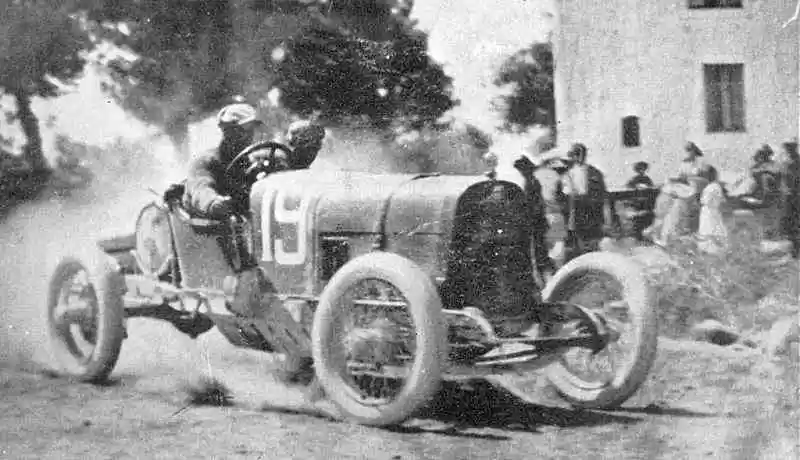

Enzo Ferrari
Născut în Modena, Italia în 1898, Enzo Ferrari a început ca șofer de mașini de curse. În anii 1920, a fost numit șofer cu Alfa Romeo și a câștigat mai multe premii de curse, inclusiv al 2-lea Circuito di Modena.
În 1929, Ferrari a fondat Scuderia Ferrari, acum divizia oficială de mașini de curse pentru Ferrari. A început, însă, ca o divizie a Alfa care s-a specializat în pregătirea mașinilor de curse pentru domnii șoferi. Aceasta a fost într-o perioadă în care cursele de mașini sport decolau într-adevăr ca activitate pentru cei bogați și celebri, care erau într-adevăr singurii care își puteau permite.
În 1931, Enzo a terminat pe locul doi la Circuito Tre Province, care avea să fie ultima dată când concura ca pilot. El a vrut să se concentreze pe familia sa și pe nașterea primului său fiu, Alfredo, numit mai frecvent Dino. Cu toate acestea, a continuat să lucreze cu Scuderia și să construiască mașini pentru Alfa până în 1939. În septembrie a aceluiași an, și-a părăsit poziția de șef al Alfa Corse pentru a-și forma propria companie de mașini Auto Avio Costruzioni în orașul său natal, Modena, Italia. Ca o condiție a plecării sale, i sa cerut să nu folosească numele Ferrari în asociere cu niciuna dintre mașinile sau cursele sale timp de cel puțin patru ani după aceea. Respectând acordul, numele companiei nu a fost schimbat în Auto Costruzioni Ferrari până în 1957, iar prima mașină care a purtat numele Ferrari a fost lansată Ferrari 125 S.

Cariera de curse
În urma prăbușirii afacerii de tâmplărie a familiei, Ferrari a început să-și caute un loc de muncă în industria auto. Și-a oferit, fără succes, serviciile către Fiat din Torino, mulțumindu-se în cele din urmă cu un loc de muncă ca șofer de testare pentru C.M.N. (Costruzioni Meccaniche Nazionali), un producător de automobile din Milano care a reconstruit caroserii uzate de camioane în mașini mici de pasageri. Ulterior a fost promovat la pilot de curse și și-a făcut debutul competitiv în cursa de urcare în deal Parma-Poggio di Berceto din 1919, acolo unde a terminat pe locul patru la categoria trei litri la volanul unui C.M.N. de 2,3 litri cu 4 cilindri. La 23 noiembrie a aceluiași an, a luat parte la Targa Florio, dar a trebuit să se retragă după ce rezervorul de combustibil al mașinii sale a avut o scurgere. Din cauza numărului mare de retrageri, a terminat pe locul 9.
În 1920, Ferrari s-a alăturat departamentului de curse al Alfa Romeo ca pilot. Ferrari a câștigat primul său Mare Premiu în 1923, la Ravenna, pe circuitul Savio. 1924 a fost cel mai bun sezon al său, cu trei victorii, inclusiv Ravenna, Polesine și Coppa Acerbo de la Pescara. Profund șocat de moartea lui Ugo Sivocci în 1923 și a lui Antonio Ascari în 1925, Ferrari, după propria sa recunoaștere, a continuat să concureze cu jumătate de inimă. În același timp, a dezvoltat un gust pentru aspectele organizatorice ale curselor de Grand Prix. După nașterea fiului său Alfredo (Dino) în 1932, Ferrari a decis să se retragă și să se concentreze în schimb pe managementul și dezvoltarea mașinilor de curse Alfa din fabrică, în cele din urmă formând o echipă de piloți superstar, cu Giuseppe Campari și Tazio Nuvolari. Această echipă se numea Scuderia Ferrari (fondată de Enzo în 1929) și acționa ca o divizie de curse pentru Alfa Romeo. Echipa a avut mare succes, datorită mașinilor excelente precum Alfa Romeo P3 și piloților talentați, precum Nuvolari. Ferrari s-a retras din pilotaj competitiv după ce a participat la 41 de Mari Premii cu un palmares de 11 victorii.
Controverse de curse și management
Stilul de conducere al lui Ferrari era autocratic și se știa că îi punea pe piloți unul împotriva celuilalt în speranța de a le îmbunătăți performanța. Unii critici consideră că Ferrari a crescut în mod deliberat presiunea psihologică asupra piloților săi, încurajând rivalitățile intra-echipă și favorizând o atmosferă de competiție intensă pentru poziția de pilot numărul unu. „S-a gândit că presiunea psihologică va produce rezultate mai bune pentru piloți”, a spus pilotul echipei Ferrari, Tony Brooks. „El se aștepta ca un pilot să depășească limitele rezonabile... Poți conduce la maximum, dar odată ce începi să te presezi să faci lucruri de care nu simți că sunt în limitele abilităților tale, devine stupid. Era destul pericol în acel moment chiar și fără a depăși limita.” Potrivit lui Mario Andretti, „[Ferrari] a cerut doar rezultate. Dar el era un tip care înțelegea și când mașinile aveau defecte. Era unul care putea întotdeauna să aprecieze efortul pe care îl depunea un pilot. El știa și a văzut asta. Era all-in. Nu avea alt interes pentru viață în afara curselor cu motor și toate complexitățile acesteia. Cumva înțeles greșit în multe privințe, pentru că era atât de exigent, atât de dur cu toată lumea, dar la sfârșitul zilei avea dreptate. Întotdeauna corect. Și de aceea aveai respectul neclintit pentru el."
Ferrari împreună cu pilotul britanic Mike Hawthorn în 1952.
Între 1955 și 1971, opt piloți Ferrari au fost uciși la volanul mașinilor de curse Ferrari: Alberto Ascari, Eugenio Castellotti, Alfonso de Portago, Luigi Musso, Peter Collins, Wolfgang von Trips, Lorenzo Bandini și Ignazio Giunti. Deși un număr atât de mare de morți nu era neobișnuit în cursele cu motor din acele zile, ziarul vatican L'Osservatore Romano a descris Ferrari ca fiind ca zeul Saturn, care și-a consumat proprii fii. În apărarea lui Ferrari, pilotul de curse de F1 contemporan, Stirling Moss, a comentat: „Nu mă pot gândi la o singură ocazie în care viața unui pilot (Ferrari) a fost luată din cauza unei defecțiuni mecanice”.
În public, Ferrari a avut grijă să recunoască piloții care și-au riscat viața pentru echipa sa, insistând că laudele ar trebui împărțite în mod egal între mașină și pilot pentru orice cursă câștigată. Cu toate acestea, prietenul său de multă vreme și contabilul companiei, Carlo Benzi, a relatat că, în privat, Ferrari spunea că „mașina a fost motivul oricărui succes”.
După moartea lui Giuseppe Campari în 1933 și a lui Alberto Ascari în 1955, ambii cu care a avut o relație personală puternică, a ales să nu se apropie prea mult de piloții săi, de teamă să nu se rănească emoțional. Mai târziu în viață, el și-a cedat poziția și s-a apropiat foarte mult de Clay Regazzoni și mai ales de Gilles Villeneuve.
|  |